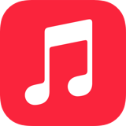
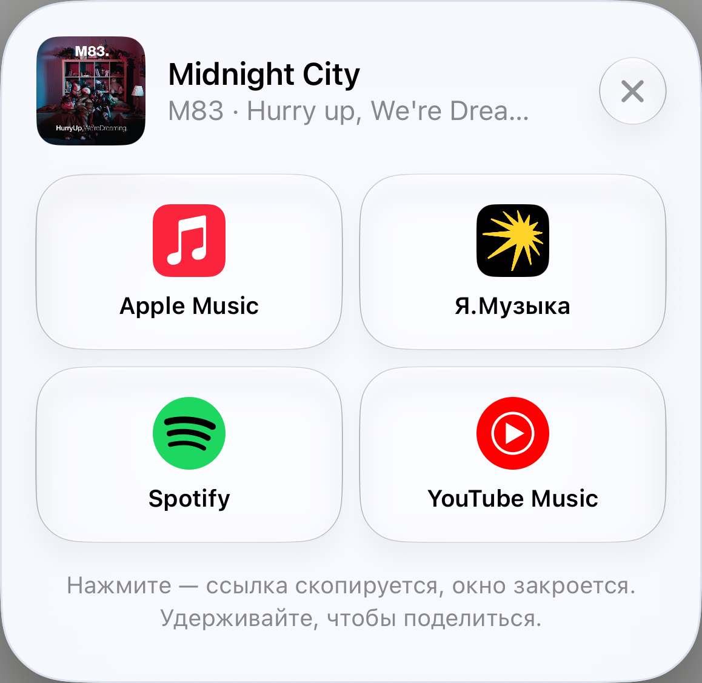

Ваша музыка.
В сервисе друга.Your Spotify find.
Their music app.
Нашли трек, которым хочется поделиться? Отправьте ссылку для сервиса друга — прямо через меню «Поделиться».Found a song they need to hear? Turn a Spotify link into a link for their music app, right from the Share menu.

Apple MusicYouTube MusicЯ.МузыкаYandex MusicПриложение для iPhone и iPad. Вход в MFE не нужен.For iPhone and iPad. No MFE account needed.

От трека до ссылки
для друга.From a song to
a link for them.
Исходную ссылку не нужно вручную переносить в MFE. Всё начинается в меню вашего музыкального приложения.You don’t have to paste the source link into MFE. Start right inside your music app’s Share menu.
Откройте «Поделиться»Open Share
В музыкальном приложении выберите трек и откройте меню «Поделиться».Choose a track in Spotify or another supported music app, then open its Share menu.
Выберите «Конвертировать ссылку»Choose Convert Link
MFE найдёт эту песню в других музыкальных сервисах.MFE looks up the same song across your enabled music services.
Нажмите на сервис другаChoose their music app
Нажмите, чтобы скопировать ссылку. Удерживайте, чтобы открыть меню отправки.Tap a service to copy its link. Touch and hold to open the Share menu.
Чаще делитесь
в один сервис?Usually share to
one music app?
Выберите его один раз в настройках. Быстрая конвертация скопирует нужную ссылку после поиска трека.Choose it once in Settings. Quick Link copies its link automatically after the track is found.
Сообщение с вашими словамиMake the message yours
Добавьте свою фразу, исполнителя и название трека. Готовое сообщение можно сразу отправить другу.Add your own note, the artist and the track title. Share a ready-to-send message with your friend.
Вернитесь к любимой находкеRevisit a favorite find
Найденные треки сохраняются в «Недавних», в том числе после конвертации через расширение.Converted tracks stay in Recent, including songs found through the Share extension.
Хорошо знатьGood to know
Можно слушать музыку в MFE?Can I listen inside MFE?
MFE находит и передаёт ссылки. Прослушивание происходит в выбранном музыкальном сервисе.MFE finds and shares links. You listen in your chosen music service.
Что если трек не найден?What if a song isn’t found?
Доступность зависит от каталога и региона. Для Я.Музыки и YouTube Music приложение может предложить ссылку на поиск, если точного совпадения нет.Availability depends on the service’s catalog and your region. MFE may offer a search link for Yandex Music or YouTube Music when an exact link is unavailable.
Нужна подписка?Do I need a subscription?
Для конвертации не нужен аккаунт MFE. Для прослушивания могут требоваться подписки самих музыкальных сервисов.You don’t need an MFE account to convert links. Your music service may require its own subscription for listening.
Для поиска нужен интернет. MFE — независимое приложение, не связанное с музыкальными сервисами.Track lookup requires an internet connection. MFE is an independent app and is not affiliated with the music services.